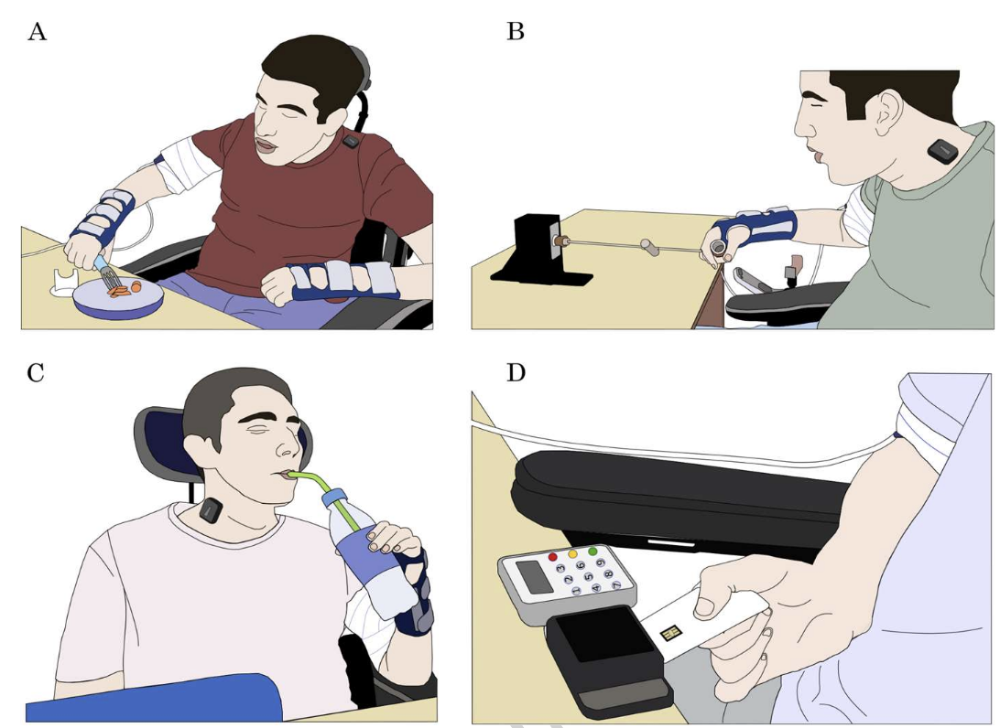
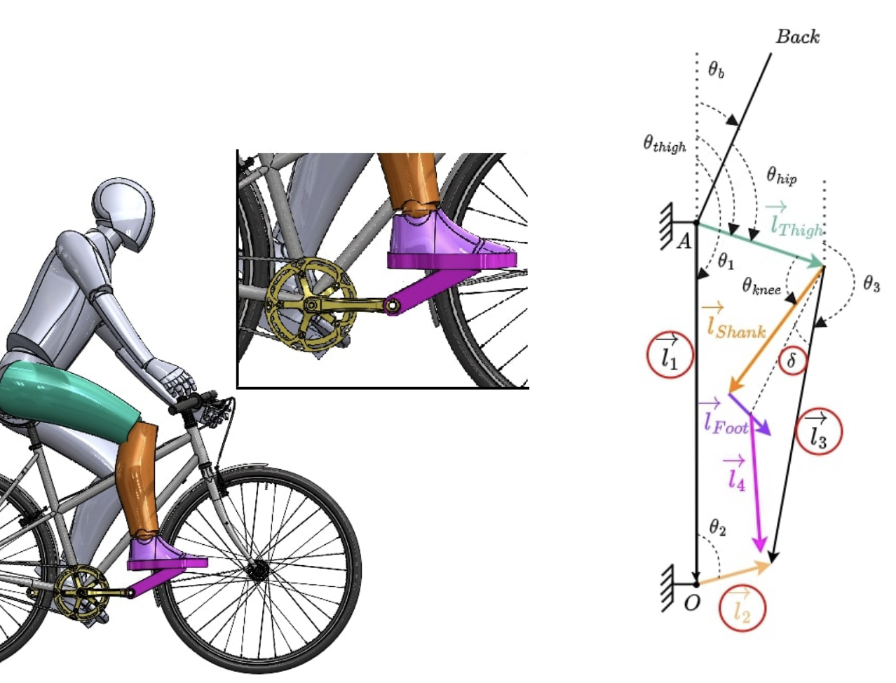
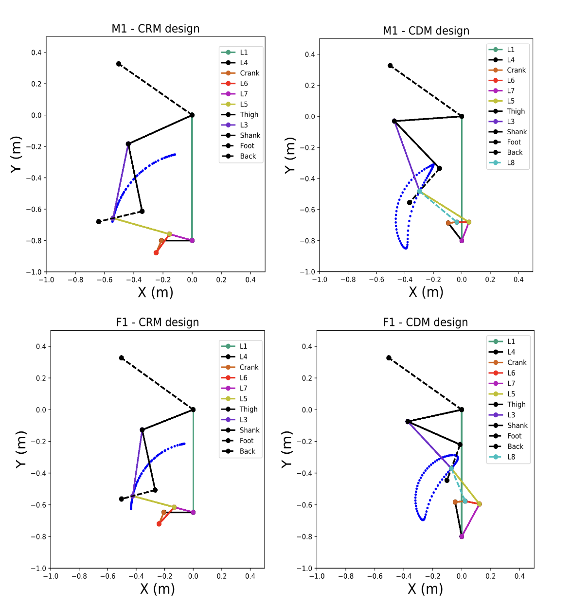
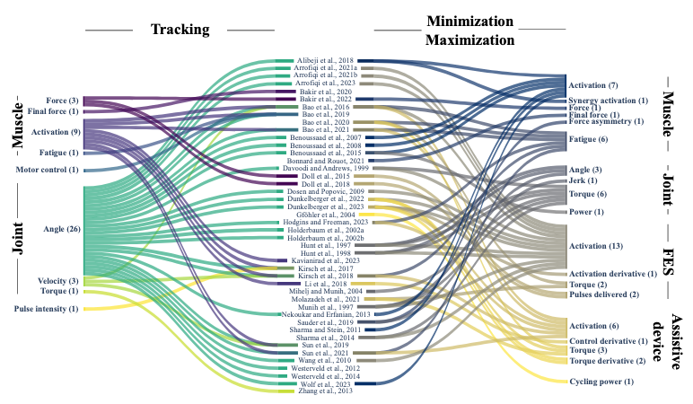
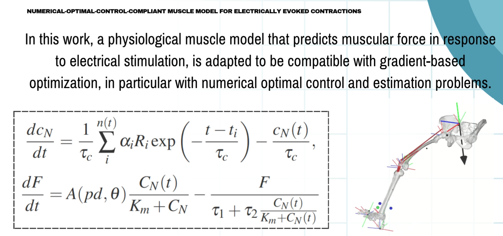
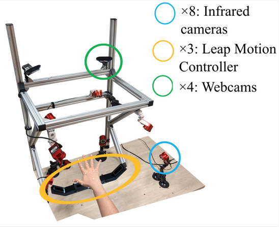
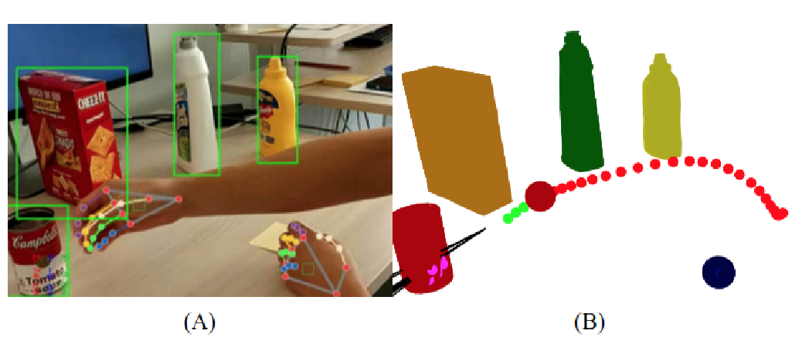
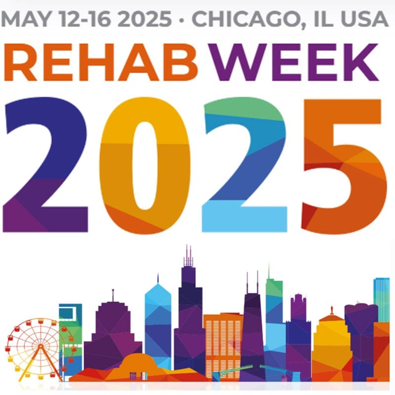
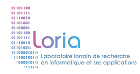

François Bailly
I am a research scientist at INRIA inside the Camin team. I work on human motion analysis using advanced robotics and numerical optimization tools, with neuroprostheses control as main target application.
Bio: From 2019 to 2021, I was a postdoc at Université de Montréal, working with Mickael Begon on biomechanical motion optimization. In 2018, I obtained my PhD in the Gepetto team at LAAS-CNRS supervised by Philippe Souères and Bruno Watier. In 2015, I graduated from École Normale Supérieure Paris-Saclay in Computer Science and Applied Mathematics.
On-going projects: In 2025, I started an associated team with Université de Montréal. In 2023, I have been awarded an ANR JCJC grant for the B-IRD project, on fast and reliable biomechanical methods dedicated to assistive technologies. Since 2023 I am part of the european EIC Pathfinder AI-HAND project led by INRIA on implanted neuroprosthese for hand movement restoration.
For any inquiries, feel free to reach out to me via mail!

Publications

Christine Azevedo Coste, Thomas Guiho, Fernanda Ferreira, François Bailly, Benjamin Degeorge, Antoine Geffrier, David Andreu, Jacques Teissier, David Guiraud, Charles Fattal
Journal of NeuroEngineering and Rehabilitation, 2026
Project Page / Paper /
@InProceedings{azevedo2026restoring,
author = {Christine Azevedo Coste and Thomas Guiho and Fernanda Ferreira and François Bailly and Benjamin Degeorge and Antoine Geffrier and David Andreu and Jacques Teissier and David Guiraud and Charles Fattal},
title = {Restoring hand grasping for patients with a complete tetraplegia with selective epineural stimulation: a parsimonious thus relevant clinical approach},
journal = {Journal of NeuroEngineering and Rehabilitation},
year = {2026},
}
Sabrina Otmani, Andrew Murray, Christine Azevedo-Coste, François Bailly
Computer Methods in Biomechanics and Biomedical Engineering, 2025
Project Page / Paper /
@InProceedings{otmani2025data,
author = {Sabrina Otmani and Andrew Murray and Christine Azevedo-Coste and François Bailly},
title = {Data-driven biomechanical optimisation of bicycle and crank-pedal design for maximizing power output},
journal = {Computer Methods in Biomechanics and Biomedical Engineering},
year = {2025},
}
Sabrina Otmani, Andrew Murray, Christine Coste, François Bailly
Computer Methods in Biomechanics and Biomedical Engineering, 2025
Project Page / Paper /
@InProceedings{Otmani25032025,
author = {Sabrina Otmani and Andrew Murray and Christine Coste and François Bailly},
title = {Maximizing cycling efficiency: innovative bicycle drive mechanisms tailored to individual muscular capacities},
journal = {Computer Methods in Biomechanics and Biomedical Engineering},
year = {2025},
}
Kevin Co, Mickael Begon, François Bailly, Florent Moissenet
Computers in Biology and Medicine, 2025
Project Page / Paper /
@InProceedings{co2025optimal,
author = {Kevin Co and Mickael Begon and François Bailly and Florent Moissenet},
title = {Optimal control-driven functional electrical stimulation: A PRISMA-ScR scoping review},
journal = {Computers in Biology and Medicine},
year = {2025},
}
Tiago Coelho-Magalhaes, Christine Azevedo-Coste, François Bailly
IEEE Transactions on Medical Robotics and Bionics, 2025
Project Page / Paper /
@InProceedings{coelho2025numerical,
author = {Tiago Coelho-Magalhaes and Christine Azevedo-Coste and François Bailly},
title = {Numerical-Optimal-Control-Compliant Muscle Model for Electrically Evoked Contractions},
journal = {IEEE Transactions on Medical Robotics and Bionics},
year = {2025},
}
Valentin Maggioni, Christine Azevedo-Coste, Sam Durand, François Bailly
Sensors, 2025
Project Page / Paper /
@InProceedings{s25041079,
author = {Valentin Maggioni and Christine Azevedo-Coste and Sam Durand and François Bailly},
title = {Optimisation and Comparison of Markerless and Marker-Based Motion Capture Methods for Hand and Finger Movement Analysis},
journal = {Sensors},
year = {2025},
}
Etienne Moullet, Justin Carpentier, Christine Azevedo-Coste, François Bailly
2024 IEEE-RAS 23rd International Conference on Humanoid Robots (Humanoids), 2024
Project Page / Paper /
@InProceedings{moullet2024grip,
author = {Etienne Moullet and Justin Carpentier and Christine Azevedo-Coste and François Bailly},
title = {I-GRIP, a Grasping Movement Intention Estimator for Intuitive Control of Assistive Devices},
booktitle = {2024 IEEE-RAS 23rd International Conference on Humanoid Robots (Humanoids)},
year = {2024},
}
Eve Charbonneau, François Bailly, Mickael Begon
Sports biomechanics, 2023
Project Page / Paper /
@InProceedings{charbonneau2023optimal,
author = {Eve Charbonneau and François Bailly and Mickael Begon},
title = {Optimal forward twisting pike somersault without self-collision},
journal = {Sports biomechanics},
year = {2023},
}
André Venne, François Bailly, Eve Charbonneau, Jennifer Dowling-Medley, Mickael Begon
Sports biomechanics, 2023
Project Page / Paper /
@InProceedings{venne2023optimal,
author = {André Venne and François Bailly and Eve Charbonneau and Jennifer Dowling-Medley and Mickael Begon},
title = {Optimal estimation of complex aerial movements using dynamic optimisation},
journal = {Sports biomechanics},
year = {2023},
}
P Puchaud, F Bailly, M Begon
Computer Methods in Applied Mechanics and Engineering, 2023
Project Page / Paper /
@InProceedings{puchaud2023direct,
author = {P Puchaud and F Bailly and M Begon},
title = {Direct multiple shooting and direct collocation perform similarly in biomechanical predictive simulations},
journal = {Computer Methods in Applied Mechanics and Engineering},
year = {2023},
}
Etienne Goubault, Felipe Verdugo, François Bailly, Mickael Begon, Fabien Dal Maso
IEEE Transactions on Human-Machine Systems, 2023
Project Page /
@InProceedings{goubault2023inertial,
author = {Etienne Goubault and Felipe Verdugo and François Bailly and Mickael Begon and Fabien Dal Maso},
title = {Inertial Measurement Units and Partial Least Square Regression to Predict Perceived Exertion during Repetitive Fatiguing Piano Tasks},
journal = {IEEE Transactions on Human-Machine Systems},
year = {2023},
}
Amedeo Ceglia, Francois Bailly, Mickael Begon
IEEE Robotics and Automation Letters, 2023
Project Page / Paper /
@InProceedings{ceglia2023moving,
author = {Amedeo Ceglia and Francois Bailly and Mickael Begon},
title = {Moving Horizon Estimation of Human Kinematics and Muscle Forces},
journal = {IEEE Robotics and Automation Letters},
year = {2023},
}
Benjamin Michaud, François Bailly, Eve Charbonneau, Amedeo Ceglia, Léa Sanchez, Mickael Begon
IEEE Transactions on Systems, Man, and Cybernetics: Systems, 2022
Project Page / Paper /
@InProceedings{michaud2022bioptim,
author = {Benjamin Michaud and François Bailly and Eve Charbonneau and Amedeo Ceglia and Léa Sanchez and Mickael Begon},
title = {Bioptim, a python framework for musculoskeletal optimal control in biomechanics},
journal = {IEEE Transactions on Systems, Man, and Cybernetics: Systems},
year = {2022},
}
François Bailly, Eve Charbonneau, Loane Dan{\`e}s, Mickael Begon
Multibody System Dynamics, 2021
Project Page / Paper /
@InProceedings{bailly2021optimal,
author = {François Bailly and Eve Charbonneau and Loane Dan{\`e}s and Mickael Begon},
title = {Optimal 3D arm strategies for maximizing twist rotation during somersault of a rigid-body model},
journal = {Multibody System Dynamics},
year = {2021},
}
François Bailly, Amedeo Ceglia, Benjamin Michaud, Dominique Rouleau, Mickael Begon
Frontiers in bioengineering and biotechnology, 2021
Project Page /
@InProceedings{bailly2021real,
author = {François Bailly and Amedeo Ceglia and Benjamin Michaud and Dominique Rouleau and Mickael Begon},
title = {Real-time and dynamically consistent estimation of muscle forces using a moving horizon emg-marker tracking algorithm—application to upper limb biomechanics},
journal = {Frontiers in bioengineering and biotechnology},
year = {2021},
}
François Bailly, Justin Carpentier, Philippe Sou{\`e}res
2021 IEEE International Conference on Robotics and Automation (ICRA), 2021
Project Page / Paper /
@InProceedings{bailly2021optimalICRA,
author = {François Bailly and Justin Carpentier and Philippe Sou{\`e}res},
title = {Optimal estimation of the centroidal dynamics of legged robots},
booktitle = {2021 IEEE International Conference on Robotics and Automation (ICRA)},
year = {2021},
}
François Bailly, Justin Carpentier, Bruno Watier, Philippe Sou{\`e}res
Computer Methods, Imaging and Visualization in Biomechanics and Biomedical Engineering: Selected Papers from the 16th International Symposium CMBBE and 4th Conference on Imaging and Visualization, August 14-16, 2019, New York City, USA, 2020
Project Page /
@InProceedings{bailly2020recursive,
author = {François Bailly and Justin Carpentier and Bruno Watier and Philippe Sou{\`e}res},
title = {Recursive Filtering of Kinetic and Kinematic Data for Center of Mass and Angular Momentum Derivative Estimation},
booktitle = {Computer Methods, Imaging and Visualization in Biomechanics and Biomedical Engineering: Selected Papers from the 16th International Symposium CMBBE and 4th Conference on Imaging and Visualization, August 14-16, 2019, New York City, USA},
year = {2020},
}
Eve Charbonneau, François Bailly, Loane Dan{\`e}s, Mickael Begon
Applied Sciences, 2020
Project Page /
@InProceedings{charbonneau2020optimal,
author = {Eve Charbonneau and François Bailly and Loane Dan{\`e}s and Mickael Begon},
title = {Optimal Control as a Tool for Innovation in Aerial Twisting on a Trampoline},
journal = {Applied Sciences},
year = {2020},
}
Melya Boukheddimi, François Bailly, Philippe Sou{\`e}res, Bruno Watier
Computer Methods in Biomechanics and Biomedical Engineering, 2019
Project Page /
@InProceedings{boukheddimi2019human,
author = {Melya Boukheddimi and François Bailly and Philippe Sou{\`e}res and Bruno Watier},
title = {Human gait simulation from a reduced set of low-dimensional tasks using hierarchical control},
journal = {Computer Methods in Biomechanics and Biomedical Engineering},
year = {2019},
}
François Bailly, Justin Carpentier, Mehdi Benallegue, Bruno Watier, Philippe Sou{\`e}res
IEEE Robotics and Automation Letters, 2019
Project Page /
@InProceedings{bailly2019estimating,
author = {François Bailly and Justin Carpentier and Mehdi Benallegue and Bruno Watier and Philippe Sou{\`e}res},
title = {Estimating the center of mass and the angular momentum derivative for legged locomotion—a recursive approach},
journal = {IEEE Robotics and Automation Letters},
year = {2019},
}
G Maldonado, F Bailly, P Sou{\`e}res, B Watier
Computer Methods in Biomechanics and Biomedical Engineering, 2019
Project Page /
@InProceedings{maldonado2019inverse,
author = {G Maldonado and F Bailly and P Sou{\`e}res and B Watier},
title = {Inverse dynamics study of the parkour kong-vault during take-off},
journal = {Computer Methods in Biomechanics and Biomedical Engineering},
year = {2019},
}
Melya Boukheddimi, François Bailly, Philippe Sou{\`e}res, Bruno Watier
2019 IEEE International Conference on Robotics and Biomimetics (ROBIO), 2019
Project Page /
@InProceedings{boukheddimi2019human2,
author = {Melya Boukheddimi and François Bailly and Philippe Sou{\`e}res and Bruno Watier},
title = {Human-like gait generation from a reduced set of tasks using the hierarchical control framework from robotics},
booktitle = {2019 IEEE International Conference on Robotics and Biomimetics (ROBIO)},
year = {2019},
}
François Bailly, Emmanuelle Pouydebat, Vincent Bels, Bruno Watier, Philippe Sou{\`e}res
7th Conference on Biomimetic and Biohybrid Systems, 2018
Project Page /
@InProceedings{bailly2018should,
author = {François Bailly and Emmanuelle Pouydebat and Vincent Bels and Bruno Watier and Philippe Sou{\`e}res},
title = {Should mobile robots have a head ? -A rationale based on behavior, automatic control and signal processing-},
booktitle = {7th Conference on Biomimetic and Biohybrid Systems},
year = {2018},
}
François Bailly, Justin Carpentier, Bertrand Pinet, Philippe Sou{\`e}res, Bruno Watier
7th IEEE International Conference on Biomedical Robotics and Biomechatronics (BioRob), 2018
Project Page /
@InProceedings{bailly2018mechanical,
author = {François Bailly and Justin Carpentier and Bertrand Pinet and Philippe Sou{\`e}res and Bruno Watier},
title = {A mechanical descriptor of human locomotion and its application to multi-contact walking in humanoids},
booktitle = {7th IEEE International Conference on Biomedical Robotics and Biomechatronics (BioRob)},
year = {2018},
}
Galo Maldonado, François Bailly, Philippe Sou{\`e}res, Bruno Watier
Scientific Reports, 2018
Project Page /
@InProceedings{maldonado2018coordination,
author = {Galo Maldonado and François Bailly and Philippe Sou{\`e}res and Bruno Watier},
title = {On the coordination of highly dynamic human movements: an extension of the Uncontrolled Manifold approach applied to precision jump in parkour},
journal = {Scientific Reports},
year = {2018},
}
François Bailly
PhD Thesis, 2018
Project Page /
@InProceedings{bailly2018descriptive,
author = {François Bailly},
title = {Descriptive and explanatory tools for human movement and state estimation in humanoid robotics},
booktitle = {PhD Thesis},
year = {2018},
}
Galo Maldonado, Francois Bailly, Philippe Soueres, Bruno Watier
Computer methods in biomechanics and biomedical engineering, 2017
Project Page /
@InProceedings{maldonado2017angular,
author = {Galo Maldonado and Francois Bailly and Philippe Soueres and Bruno Watier},
title = {Angular momentum regulation strategies for highly dynamic landing in Parkour},
journal = {Computer methods in biomechanics and biomedical engineering},
year = {2017},
}
François Bailly, Sylvain Guilley, Annelie Heuser, Olivier Rioul
16th Workshop on Cryptographic Hardware and Embedded Systems (CHES 2014), 2014
Project Page /
@InProceedings{bailly2014optimality,
author = {François Bailly and Sylvain Guilley and Annelie Heuser and Olivier Rioul},
title = {On optimality of MIA for unknown leakage models and related new practical results},
booktitle = {16th Workshop on Cryptographic Hardware and Embedded Systems (CHES 2014)},
year = {2014},
}Talks

Rehabweek Chicago 2025, USA, 2025
Link
Hybrid workshop: online (remote) and face-to-face at UNICAMP, center BIOS, Campinas, São Paulo State, Brazil, 2025
Link


CMBBE 2023 Paris, France, 2023

47éme congres de la Société de Biomécanique 2022, Monastir, Tunisia, 2022
CMBBE 2021 - Bonn, Germany, 2021

IEEE ICRA 2021 - Xi'an, China, 2021

21st Biennal Meeting of the Canadian Society for Biomechanics - Montréal, Canada, 2021
21st Biennal Meeting of the Canadian Society for Biomechanics - Montréal, Canada, 2021

IEEE IROS 2019 - Macau, China, 2019
CMBBE 16th International Symposium 2019 - New-York City, USA, 2019

PhD thesis defense - LAAS-CNRS, Toulouse, France, 2018

IEEE BIOROB 7th International Conference 2018 - University of Twente, The Netherlands, 2018

Living Mahchines 2018 - Paris, France, 2018

JNRH 2017 - LIRMM Montpellier, France, 2017
Homepage Template
Feel free to use this website as a template! It is fully responsive and very easy to use and maintain as it uses a python script that crawls your bib files to automatically add the papers and talks. Checkout the github repository for instructions on how to use it.